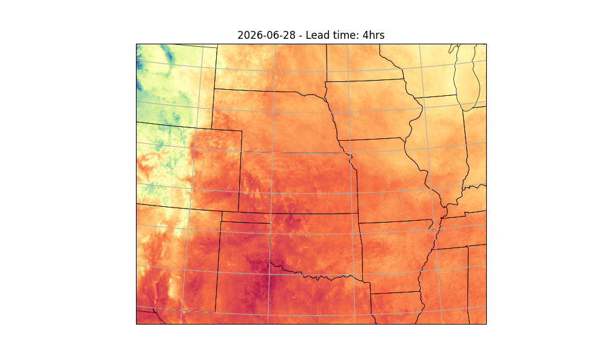

Note
Go to the end to download the full example code.
Running StormCast Inference#
Basic StormCast inference workflow.
This example will demonstrate how to run a simple inference workflow to generate a basic determinstic forecast using StormCast. For details about the stormcast model, see
# /// script
# dependencies = [
# "earth2studio[data,stormcast] @ git+https://github.com/NVIDIA/earth2studio.git@0.16.0",
# "cartopy",
# ]
# ///
Set Up#
All workflows inside Earth2Studio require constructed components to be
handed to them. In this example, let’s take a look at the most basic:
earth2studio.run.deterministic().
Thus, we need the following:
Prognostic Model: Use the built in StormCast Model
earth2studio.models.px.StormCast.Datasource: Pull data from the HRRR data api
earth2studio.data.HRRR.IO Backend: Let’s save the outputs into a Zarr store
earth2studio.io.ZarrBackend.
StormCast also requires a conditioning data source. We use a forecast data source here,
GFS_FX earth2studio.data.GFS_FX which is the default, but a non-forecast
data source such as ARCO could also be used with appropriate time stamps.
from datetime import datetime, timedelta
from loguru import logger
from tqdm import tqdm
logger.remove()
logger.add(lambda msg: tqdm.write(msg, end=""), colorize=True)
import os
os.makedirs("outputs", exist_ok=True)
from dotenv import load_dotenv
load_dotenv() # TODO: make common example prep function
from earth2studio.data import HRRR
from earth2studio.io import ZarrBackend
from earth2studio.models.px import StormCast
# Load the default model package which downloads the check point from NGC
# Use the default conditioning data source GFS_FX
package = StormCast.load_default_package()
model = StormCast.load_model(package)
# Create the data source
data = HRRR()
# Create the IO handler, store in memory
io = ZarrBackend()
Downloading config.json: 0%| | 0.00/40.0 [00:00<?, ?B/s]
Downloading config.json: 100%|██████████| 40.0/40.0 [00:00<00:00, 196B/s]
Downloading config.json: 100%|██████████| 40.0/40.0 [00:00<00:00, 195B/s]
Downloading model.yaml: 0%| | 0.00/2.64k [00:00<?, ?B/s]
Downloading model.yaml: 100%|██████████| 2.64k/2.64k [00:00<00:00, 10.5kB/s]
Downloading model.yaml: 100%|██████████| 2.64k/2.64k [00:00<00:00, 10.4kB/s]
Downloading StormCastUNet.0.0.mdlus: 0%| | 0.00/300M [00:00<?, ?B/s]
Downloading StormCastUNet.0.0.mdlus: 3%|▎ | 10.0M/300M [00:00<00:05, 55.6MB/s]
Downloading StormCastUNet.0.0.mdlus: 13%|█▎ | 40.0M/300M [00:00<00:01, 164MB/s]
Downloading StormCastUNet.0.0.mdlus: 23%|██▎ | 70.0M/300M [00:00<00:01, 193MB/s]
Downloading StormCastUNet.0.0.mdlus: 33%|███▎ | 100M/300M [00:00<00:01, 205MB/s]
Downloading StormCastUNet.0.0.mdlus: 43%|████▎ | 130M/300M [00:00<00:00, 230MB/s]
Downloading StormCastUNet.0.0.mdlus: 57%|█████▋ | 170M/300M [00:00<00:00, 267MB/s]
Downloading StormCastUNet.0.0.mdlus: 67%|██████▋ | 200M/300M [00:00<00:00, 280MB/s]
Downloading StormCastUNet.0.0.mdlus: 77%|███████▋ | 230M/300M [00:01<00:00, 284MB/s]
Downloading StormCastUNet.0.0.mdlus: 90%|█████████ | 270M/300M [00:01<00:00, 303MB/s]
Downloading StormCastUNet.0.0.mdlus: 100%|██████████| 300M/300M [00:01<00:00, 258MB/s]
Downloading EDMPrecond.0.0.mdlus: 0%| | 0.00/462M [00:00<?, ?B/s]
Downloading EDMPrecond.0.0.mdlus: 2%|▏ | 10.0M/462M [00:00<00:06, 72.9MB/s]
Downloading EDMPrecond.0.0.mdlus: 11%|█ | 50.0M/462M [00:00<00:01, 244MB/s]
Downloading EDMPrecond.0.0.mdlus: 22%|██▏ | 100M/462M [00:00<00:01, 332MB/s]
Downloading EDMPrecond.0.0.mdlus: 32%|███▏ | 150M/462M [00:00<00:00, 370MB/s]
Downloading EDMPrecond.0.0.mdlus: 43%|████▎ | 200M/462M [00:00<00:00, 396MB/s]
Downloading EDMPrecond.0.0.mdlus: 52%|█████▏ | 240M/462M [00:00<00:00, 368MB/s]
Downloading EDMPrecond.0.0.mdlus: 63%|██████▎ | 290M/462M [00:00<00:00, 388MB/s]
Downloading EDMPrecond.0.0.mdlus: 74%|███████▎ | 340M/462M [00:00<00:00, 406MB/s]
Downloading EDMPrecond.0.0.mdlus: 84%|████████▍ | 390M/462M [00:01<00:00, 417MB/s]
Downloading EDMPrecond.0.0.mdlus: 93%|█████████▎| 430M/462M [00:01<00:00, 400MB/s]
Downloading EDMPrecond.0.0.mdlus: 100%|██████████| 462M/462M [00:01<00:00, 366MB/s]
Downloading metadata.zarr.zip: 0%| | 0.00/1.71M [00:00<?, ?B/s]
Downloading metadata.zarr.zip: 100%|██████████| 1.71M/1.71M [00:00<00:00, 13.6MB/s]
Downloading metadata.zarr.zip: 100%|██████████| 1.71M/1.71M [00:00<00:00, 13.5MB/s]
Execute the Workflow#
With all components initialized, running the workflow is a single line of Python code. Workflow will return the provided IO object back to the user, which can be used to then post process. Some have additional APIs that can be handy for post-processing or saving to file. Check the API docs for more information.
For the forecast we will predict for 4 hours
import earth2studio.run as run
nsteps = 4
today = datetime.today() - timedelta(days=1)
date = today.isoformat().split("T")[0]
io = run.deterministic([date], nsteps, model, data, io)
print(io.root.tree())
2026-06-29 17:41:56.193 | INFO | earth2studio.run:deterministic:87 - Running simple workflow!
2026-06-29 17:41:56.193 | INFO | earth2studio.run:deterministic:94 - Inference device: cuda
Fetching HRRR data: 0%| | 0/99 [00:00<?, ?it/s]
2026-06-29 17:42:01.784 | DEBUG | earth2studio.data.hrrr:fetch_array:484 - Fetching HRRR grib file: noaa-hrrr-bdp-pds/hrrr.20260628/conus/hrrr.t00z.wrfnatf00.grib2 149404883-1453233
Fetching HRRR data: 0%| | 0/99 [00:00<?, ?it/s]
2026-06-29 17:42:01.787 | DEBUG | earth2studio.data.hrrr:fetch_array:484 - Fetching HRRR grib file: noaa-hrrr-bdp-pds/hrrr.20260628/conus/hrrr.t00z.wrfnatf00.grib2 7438594-1572437
Fetching HRRR data: 0%| | 0/99 [00:00<?, ?it/s]
2026-06-29 17:42:01.789 | DEBUG | earth2studio.data.hrrr:fetch_array:484 - Fetching HRRR grib file: noaa-hrrr-bdp-pds/hrrr.20260628/conus/hrrr.t00z.wrfnatf00.grib2 33967706-1512968
Fetching HRRR data: 0%| | 0/99 [00:00<?, ?it/s]
2026-06-29 17:42:01.791 | DEBUG | earth2studio.data.hrrr:fetch_array:484 - Fetching HRRR grib file: noaa-hrrr-bdp-pds/hrrr.20260628/conus/hrrr.t00z.wrfnatf00.grib2 39768311-2209481
Fetching HRRR data: 0%| | 0/99 [00:00<?, ?it/s]
2026-06-29 17:42:01.793 | DEBUG | earth2studio.data.hrrr:fetch_array:484 - Fetching HRRR grib file: noaa-hrrr-bdp-pds/hrrr.20260628/conus/hrrr.t00z.wrfnatf00.grib2 48916695-1078621
Fetching HRRR data: 0%| | 0/99 [00:00<?, ?it/s]
2026-06-29 17:42:01.795 | DEBUG | earth2studio.data.hrrr:fetch_array:484 - Fetching HRRR grib file: noaa-hrrr-bdp-pds/hrrr.20260628/conus/hrrr.t00z.wrfnatf00.grib2 74759829-1099094
Fetching HRRR data: 0%| | 0/99 [00:00<?, ?it/s]
2026-06-29 17:42:01.797 | DEBUG | earth2studio.data.hrrr:fetch_array:484 - Fetching HRRR grib file: noaa-hrrr-bdp-pds/hrrr.20260628/conus/hrrr.t00z.wrfnatf00.grib2 259454793-2235384
Fetching HRRR data: 0%| | 0/99 [00:00<?, ?it/s]
2026-06-29 17:42:01.798 | DEBUG | earth2studio.data.hrrr:fetch_array:484 - Fetching HRRR grib file: noaa-hrrr-bdp-pds/hrrr.20260628/conus/hrrr.t00z.wrfnatf00.grib2 177341489-1357846
Fetching HRRR data: 0%| | 0/99 [00:00<?, ?it/s]
2026-06-29 17:42:01.800 | DEBUG | earth2studio.data.hrrr:fetch_array:484 - Fetching HRRR grib file: noaa-hrrr-bdp-pds/hrrr.20260628/conus/hrrr.t00z.wrfnatf00.grib2 67195117-2219208
Fetching HRRR data: 0%| | 0/99 [00:00<?, ?it/s]
2026-06-29 17:42:01.802 | DEBUG | earth2studio.data.hrrr:fetch_array:484 - Fetching HRRR grib file: noaa-hrrr-bdp-pds/hrrr.20260628/conus/hrrr.t00z.wrfnatf00.grib2 19546234-1133191
Fetching HRRR data: 0%| | 0/99 [00:00<?, ?it/s]
2026-06-29 17:42:01.804 | DEBUG | earth2studio.data.hrrr:fetch_array:484 - Fetching HRRR grib file: noaa-hrrr-bdp-pds/hrrr.20260628/conus/hrrr.t00z.wrfsfcf00.grib2 0-396755
Fetching HRRR data: 0%| | 0/99 [00:00<?, ?it/s]
2026-06-29 17:42:01.806 | DEBUG | earth2studio.data.hrrr:fetch_array:484 - Fetching HRRR grib file: noaa-hrrr-bdp-pds/hrrr.20260628/conus/hrrr.t00z.wrfnatf00.grib2 206256273-942247
Fetching HRRR data: 0%| | 0/99 [00:00<?, ?it/s]
2026-06-29 17:42:01.807 | DEBUG | earth2studio.data.hrrr:fetch_array:484 - Fetching HRRR grib file: noaa-hrrr-bdp-pds/hrrr.20260628/conus/hrrr.t00z.wrfnatf00.grib2 372483826-853136
Fetching HRRR data: 0%| | 0/99 [00:00<?, ?it/s]
2026-06-29 17:42:01.809 | DEBUG | earth2studio.data.hrrr:fetch_array:484 - Fetching HRRR grib file: noaa-hrrr-bdp-pds/hrrr.20260628/conus/hrrr.t00z.wrfnatf00.grib2 23335873-1111041
Fetching HRRR data: 0%| | 0/99 [00:00<?, ?it/s]
2026-06-29 17:42:01.811 | DEBUG | earth2studio.data.hrrr:fetch_array:484 - Fetching HRRR grib file: noaa-hrrr-bdp-pds/hrrr.20260628/conus/hrrr.t00z.wrfnatf00.grib2 200654712-2469710
Fetching HRRR data: 0%| | 0/99 [00:00<?, ?it/s]
2026-06-29 17:42:01.812 | DEBUG | earth2studio.data.hrrr:fetch_array:484 - Fetching HRRR grib file: noaa-hrrr-bdp-pds/hrrr.20260628/conus/hrrr.t00z.wrfnatf00.grib2 60410104-1094345
Fetching HRRR data: 0%| | 0/99 [00:00<?, ?it/s]
2026-06-29 17:42:01.814 | DEBUG | earth2studio.data.hrrr:fetch_array:484 - Fetching HRRR grib file: noaa-hrrr-bdp-pds/hrrr.20260628/conus/hrrr.t00z.wrfnatf00.grib2 81663117-2224804
Fetching HRRR data: 0%| | 0/99 [00:00<?, ?it/s]
2026-06-29 17:42:01.815 | DEBUG | earth2studio.data.hrrr:fetch_array:484 - Fetching HRRR grib file: noaa-hrrr-bdp-pds/hrrr.20260628/conus/hrrr.t00z.wrfnatf00.grib2 6273231-1165363
Fetching HRRR data: 0%| | 0/99 [00:00<?, ?it/s]
2026-06-29 17:42:01.817 | DEBUG | earth2studio.data.hrrr:fetch_array:484 - Fetching HRRR grib file: noaa-hrrr-bdp-pds/hrrr.20260628/conus/hrrr.t00z.wrfnatf00.grib2 119307820-1086680
Fetching HRRR data: 0%| | 0/99 [00:00<?, ?it/s]
2026-06-29 17:42:01.819 | DEBUG | earth2studio.data.hrrr:fetch_array:484 - Fetching HRRR grib file: noaa-hrrr-bdp-pds/hrrr.20260628/conus/hrrr.t00z.wrfnatf00.grib2 57986825-2423279
Fetching HRRR data: 0%| | 0/99 [00:00<?, ?it/s]
2026-06-29 17:42:01.820 | DEBUG | earth2studio.data.hrrr:fetch_array:484 - Fetching HRRR grib file: noaa-hrrr-bdp-pds/hrrr.20260628/conus/hrrr.t00z.wrfnatf00.grib2 105541292-1606757
Fetching HRRR data: 0%| | 0/99 [00:00<?, ?it/s]
2026-06-29 17:42:01.821 | DEBUG | earth2studio.data.hrrr:fetch_array:484 - Fetching HRRR grib file: noaa-hrrr-bdp-pds/hrrr.20260628/conus/hrrr.t00z.wrfnatf00.grib2 93176163-1041950
Fetching HRRR data: 0%| | 0/99 [00:00<?, ?it/s]
2026-06-29 17:42:01.822 | DEBUG | earth2studio.data.hrrr:fetch_array:484 - Fetching HRRR grib file: noaa-hrrr-bdp-pds/hrrr.20260628/conus/hrrr.t00z.wrfnatf00.grib2 173853952-2508560
Fetching HRRR data: 0%| | 0/99 [00:00<?, ?it/s]
2026-06-29 17:42:01.823 | DEBUG | earth2studio.data.hrrr:fetch_array:484 - Fetching HRRR grib file: noaa-hrrr-bdp-pds/hrrr.20260628/conus/hrrr.t00z.wrfnatf00.grib2 148394983-1009900
Fetching HRRR data: 0%| | 0/99 [00:00<?, ?it/s]
2026-06-29 17:42:01.824 | DEBUG | earth2studio.data.hrrr:fetch_array:484 - Fetching HRRR grib file: noaa-hrrr-bdp-pds/hrrr.20260628/conus/hrrr.t00z.wrfnatf00.grib2 140730906-2190501
Fetching HRRR data: 0%| | 0/99 [00:00<?, ?it/s]
2026-06-29 17:42:01.825 | DEBUG | earth2studio.data.hrrr:fetch_array:484 - Fetching HRRR grib file: noaa-hrrr-bdp-pds/hrrr.20260628/conus/hrrr.t00z.wrfnatf00.grib2 369752800-627976
Fetching HRRR data: 0%| | 0/99 [00:00<?, ?it/s]
2026-06-29 17:42:01.826 | DEBUG | earth2studio.data.hrrr:fetch_array:484 - Fetching HRRR grib file: noaa-hrrr-bdp-pds/hrrr.20260628/conus/hrrr.t00z.wrfnatf00.grib2 176362512-978977
Fetching HRRR data: 0%| | 0/99 [00:00<?, ?it/s]
2026-06-29 17:42:01.828 | DEBUG | earth2studio.data.hrrr:fetch_array:484 - Fetching HRRR grib file: noaa-hrrr-bdp-pds/hrrr.20260628/conus/hrrr.t00z.wrfnatf00.grib2 104438341-1102951
Fetching HRRR data: 0%| | 0/99 [00:00<?, ?it/s]
2026-06-29 17:42:01.829 | DEBUG | earth2studio.data.hrrr:fetch_array:484 - Fetching HRRR grib file: noaa-hrrr-bdp-pds/hrrr.20260628/conus/hrrr.t00z.wrfnatf00.grib2 101939332-2499009
Fetching HRRR data: 0%| | 0/99 [00:00<?, ?it/s]
2026-06-29 17:42:01.830 | DEBUG | earth2studio.data.hrrr:fetch_array:484 - Fetching HRRR grib file: noaa-hrrr-bdp-pds/hrrr.20260628/conus/hrrr.t00z.wrfnatf00.grib2 137590953-1007603
Fetching HRRR data: 0%| | 0/99 [00:00<?, ?it/s]
2026-06-29 17:42:01.831 | DEBUG | earth2studio.data.hrrr:fetch_array:484 - Fetching HRRR grib file: noaa-hrrr-bdp-pds/hrrr.20260628/conus/hrrr.t00z.wrfnatf00.grib2 47424057-1492638
Fetching HRRR data: 0%| | 0/99 [00:00<?, ?it/s]
2026-06-29 17:42:01.832 | DEBUG | earth2studio.data.hrrr:fetch_array:484 - Fetching HRRR grib file: noaa-hrrr-bdp-pds/hrrr.20260628/conus/hrrr.t00z.wrfnatf00.grib2 145867345-2527638
Fetching HRRR data: 0%| | 0/99 [00:00<?, ?it/s]
2026-06-29 17:42:01.833 | DEBUG | earth2studio.data.hrrr:fetch_array:484 - Fetching HRRR grib file: noaa-hrrr-bdp-pds/hrrr.20260628/conus/hrrr.t00z.wrfnatf00.grib2 10119175-1108951
Fetching HRRR data: 0%| | 0/99 [00:00<?, ?it/s]
2026-06-29 17:42:01.834 | DEBUG | earth2studio.data.hrrr:fetch_array:484 - Fetching HRRR grib file: noaa-hrrr-bdp-pds/hrrr.20260628/conus/hrrr.t00z.wrfnatf00.grib2 77429333-1015071
Fetching HRRR data: 0%| | 0/99 [00:00<?, ?it/s]
2026-06-29 17:42:01.835 | DEBUG | earth2studio.data.hrrr:fetch_array:484 - Fetching HRRR grib file: noaa-hrrr-bdp-pds/hrrr.20260628/conus/hrrr.t00z.wrfnatf00.grib2 322212097-828860
Fetching HRRR data: 0%| | 0/99 [00:00<?, ?it/s]
2026-06-29 17:42:01.836 | DEBUG | earth2studio.data.hrrr:fetch_array:484 - Fetching HRRR grib file: noaa-hrrr-bdp-pds/hrrr.20260628/conus/hrrr.t00z.wrfnatf00.grib2 131501651-2526000
Fetching HRRR data: 0%| | 0/99 [00:00<?, ?it/s]
2026-06-29 17:42:01.837 | DEBUG | earth2studio.data.hrrr:fetch_array:484 - Fetching HRRR grib file: noaa-hrrr-bdp-pds/hrrr.20260628/conus/hrrr.t00z.wrfnatf00.grib2 268129381-836412
Fetching HRRR data: 0%| | 0/99 [00:00<?, ?it/s]
2026-06-29 17:42:01.838 | DEBUG | earth2studio.data.hrrr:fetch_array:484 - Fetching HRRR grib file: noaa-hrrr-bdp-pds/hrrr.20260628/conus/hrrr.t00z.wrfnatf00.grib2 108143894-1033731
Fetching HRRR data: 0%| | 0/99 [00:00<?, ?it/s]
2026-06-29 17:42:01.839 | DEBUG | earth2studio.data.hrrr:fetch_array:484 - Fetching HRRR grib file: noaa-hrrr-bdp-pds/hrrr.20260628/conus/hrrr.t00z.wrfnatf00.grib2 26420576-2207475
Fetching HRRR data: 0%| | 0/99 [00:00<?, ?it/s]
2026-06-29 17:42:01.840 | DEBUG | earth2studio.data.hrrr:fetch_array:484 - Fetching HRRR grib file: noaa-hrrr-bdp-pds/hrrr.20260628/conus/hrrr.t00z.wrfnatf00.grib2 17184994-2361240
Fetching HRRR data: 0%| | 0/99 [00:00<?, ?it/s]
2026-06-29 17:42:01.841 | DEBUG | earth2studio.data.hrrr:fetch_array:484 - Fetching HRRR grib file: noaa-hrrr-bdp-pds/hrrr.20260628/conus/hrrr.t00z.wrfnatf00.grib2 13192796-2207327
Fetching HRRR data: 0%| | 0/99 [00:00<?, ?it/s]
2026-06-29 17:42:01.841 | DEBUG | earth2studio.data.hrrr:fetch_array:484 - Fetching HRRR grib file: noaa-hrrr-bdp-pds/hrrr.20260628/conus/hrrr.t00z.wrfnatf00.grib2 204075547-1270104
Fetching HRRR data: 0%| | 0/99 [00:00<?, ?it/s]
2026-06-29 17:42:01.842 | DEBUG | earth2studio.data.hrrr:fetch_array:484 - Fetching HRRR grib file: noaa-hrrr-bdp-pds/hrrr.20260628/conus/hrrr.t00z.wrfnatf00.grib2 92176872-999291
Fetching HRRR data: 0%| | 0/99 [00:00<?, ?it/s]
2026-06-29 17:42:01.843 | DEBUG | earth2studio.data.hrrr:fetch_array:484 - Fetching HRRR grib file: noaa-hrrr-bdp-pds/hrrr.20260628/conus/hrrr.t00z.wrfnatf00.grib2 168642393-2383743
Fetching HRRR data: 0%| | 0/99 [00:00<?, ?it/s]
2026-06-29 17:42:01.843 | DEBUG | earth2studio.data.hrrr:fetch_array:484 - Fetching HRRR grib file: noaa-hrrr-bdp-pds/hrrr.20260628/conus/hrrr.t00z.wrfnatf00.grib2 370380776-1262904
Fetching HRRR data: 0%| | 0/99 [00:00<?, ?it/s]
2026-06-29 17:42:01.844 | DEBUG | earth2studio.data.hrrr:fetch_array:484 - Fetching HRRR grib file: noaa-hrrr-bdp-pds/hrrr.20260628/conus/hrrr.t00z.wrfnatf00.grib2 3998084-2275147
Fetching HRRR data: 0%| | 0/99 [00:00<?, ?it/s]
2026-06-29 17:42:01.845 | DEBUG | earth2studio.data.hrrr:fetch_array:484 - Fetching HRRR grib file: noaa-hrrr-bdp-pds/hrrr.20260628/conus/hrrr.t00z.wrfnatf00.grib2 151824641-995459
Fetching HRRR data: 0%| | 0/99 [00:00<?, ?it/s]
2026-06-29 17:42:01.845 | DEBUG | earth2studio.data.hrrr:fetch_array:484 - Fetching HRRR grib file: noaa-hrrr-bdp-pds/hrrr.20260628/conus/hrrr.t00z.wrfnatf00.grib2 368300126-1452674
Fetching HRRR data: 0%| | 0/99 [00:00<?, ?it/s]
2026-06-29 17:42:01.846 | DEBUG | earth2studio.data.hrrr:fetch_array:484 - Fetching HRRR grib file: noaa-hrrr-bdp-pds/hrrr.20260628/conus/hrrr.t00z.wrfnatf00.grib2 49995316-1078682
Fetching HRRR data: 0%| | 0/99 [00:00<?, ?it/s]
2026-06-29 17:42:01.847 | DEBUG | earth2studio.data.hrrr:fetch_array:484 - Fetching HRRR grib file: noaa-hrrr-bdp-pds/hrrr.20260628/conus/hrrr.t00z.wrfnatf00.grib2 107148049-995845
Fetching HRRR data: 0%| | 0/99 [00:00<?, ?it/s]
2026-06-29 17:42:01.847 | DEBUG | earth2studio.data.hrrr:fetch_array:484 - Fetching HRRR grib file: noaa-hrrr-bdp-pds/hrrr.20260628/conus/hrrr.t00z.wrfnatf00.grib2 78444404-1051183
Fetching HRRR data: 0%| | 0/99 [00:00<?, ?it/s]
2026-06-29 17:42:01.848 | DEBUG | earth2studio.data.hrrr:fetch_array:484 - Fetching HRRR grib file: noaa-hrrr-bdp-pds/hrrr.20260628/conus/hrrr.t00z.wrfnatf00.grib2 43920149-2402199
Fetching HRRR data: 0%| | 0/99 [00:00<?, ?it/s]
2026-06-29 17:42:01.848 | DEBUG | earth2studio.data.hrrr:fetch_array:484 - Fetching HRRR grib file: noaa-hrrr-bdp-pds/hrrr.20260628/conus/hrrr.t00z.wrfnatf00.grib2 135082805-1528876
Fetching HRRR data: 0%| | 0/99 [00:00<?, ?it/s]
2026-06-29 17:42:01.849 | DEBUG | earth2studio.data.hrrr:fetch_array:484 - Fetching HRRR grib file: noaa-hrrr-bdp-pds/hrrr.20260628/conus/hrrr.t00z.wrfnatf00.grib2 120394500-1596855
Fetching HRRR data: 0%| | 0/99 [00:00<?, ?it/s]
2026-06-29 17:42:01.850 | DEBUG | earth2studio.data.hrrr:fetch_array:484 - Fetching HRRR grib file: noaa-hrrr-bdp-pds/hrrr.20260628/conus/hrrr.t00z.wrfnatf00.grib2 178699335-938058
Fetching HRRR data: 0%| | 0/99 [00:00<?, ?it/s]
2026-06-29 17:42:01.850 | DEBUG | earth2studio.data.hrrr:fetch_array:484 - Fetching HRRR grib file: noaa-hrrr-bdp-pds/hrrr.20260628/conus/hrrr.t00z.wrfnatf00.grib2 32850067-1117639
Fetching HRRR data: 0%| | 0/99 [00:00<?, ?it/s]
2026-06-29 17:42:01.851 | DEBUG | earth2studio.data.hrrr:fetch_array:484 - Fetching HRRR grib file: noaa-hrrr-bdp-pds/hrrr.20260628/conus/hrrr.t00z.wrfnatf00.grib2 22214345-1121528
Fetching HRRR data: 0%| | 0/99 [00:00<?, ?it/s]
2026-06-29 17:42:01.852 | DEBUG | earth2studio.data.hrrr:fetch_array:484 - Fetching HRRR grib file: noaa-hrrr-bdp-pds/hrrr.20260628/conus/hrrr.t00z.wrfnatf00.grib2 64080871-1061736
Fetching HRRR data: 0%| | 0/99 [00:00<?, ?it/s]
2026-06-29 17:42:01.852 | DEBUG | earth2studio.data.hrrr:fetch_array:484 - Fetching HRRR grib file: noaa-hrrr-bdp-pds/hrrr.20260628/conus/hrrr.t00z.wrfnatf00.grib2 317881848-1854955
Fetching HRRR data: 0%| | 0/99 [00:00<?, ?it/s]
2026-06-29 17:42:01.853 | DEBUG | earth2studio.data.hrrr:fetch_array:484 - Fetching HRRR grib file: noaa-hrrr-bdp-pds/hrrr.20260628/conus/hrrr.t00z.wrfnatf00.grib2 179637393-970593
Fetching HRRR data: 0%| | 0/99 [00:00<?, ?it/s]
2026-06-29 17:42:01.854 | DEBUG | earth2studio.data.hrrr:fetch_array:484 - Fetching HRRR grib file: noaa-hrrr-bdp-pds/hrrr.20260628/conus/hrrr.t00z.wrfnatf00.grib2 20679425-1534920
Fetching HRRR data: 0%| | 0/99 [00:00<?, ?it/s]
2026-06-29 17:42:01.854 | DEBUG | earth2studio.data.hrrr:fetch_array:484 - Fetching HRRR grib file: noaa-hrrr-bdp-pds/hrrr.20260628/conus/hrrr.t00z.wrfnatf00.grib2 126212774-2218636
Fetching HRRR data: 0%| | 0/99 [00:00<?, ?it/s]
2026-06-29 17:42:01.855 | DEBUG | earth2studio.data.hrrr:fetch_array:484 - Fetching HRRR grib file: noaa-hrrr-bdp-pds/hrrr.20260628/conus/hrrr.t00z.wrfnatf00.grib2 136611681-979272
Fetching HRRR data: 0%| | 0/99 [00:00<?, ?it/s]
2026-06-29 17:42:01.856 | DEBUG | earth2studio.data.hrrr:fetch_array:484 - Fetching HRRR grib file: noaa-hrrr-bdp-pds/hrrr.20260628/conus/hrrr.t00z.wrfnatf00.grib2 371643680-840146
Fetching HRRR data: 0%| | 0/99 [00:00<?, ?it/s]
2026-06-29 17:42:01.856 | DEBUG | earth2studio.data.hrrr:fetch_array:484 - Fetching HRRR grib file: noaa-hrrr-bdp-pds/hrrr.20260628/conus/hrrr.t00z.wrfnatf00.grib2 63039568-1041303
Fetching HRRR data: 0%| | 0/99 [00:00<?, ?it/s]
2026-06-29 17:42:01.857 | DEBUG | earth2studio.data.hrrr:fetch_array:484 - Fetching HRRR grib file: noaa-hrrr-bdp-pds/hrrr.20260628/conus/hrrr.t00z.wrfnatf00.grib2 89495737-1105886
Fetching HRRR data: 0%| | 0/99 [00:00<?, ?it/s]
2026-06-29 17:42:01.857 | DEBUG | earth2studio.data.hrrr:fetch_array:484 - Fetching HRRR grib file: noaa-hrrr-bdp-pds/hrrr.20260628/conus/hrrr.t00z.wrfnatf00.grib2 36590550-1098457
Fetching HRRR data: 0%| | 0/99 [00:00<?, ?it/s]
2026-06-29 17:42:01.858 | DEBUG | earth2studio.data.hrrr:fetch_array:484 - Fetching HRRR grib file: noaa-hrrr-bdp-pds/hrrr.20260628/conus/hrrr.t00z.wrfnatf00.grib2 111286942-2234003
Fetching HRRR data: 0%| | 0/99 [00:00<?, ?it/s]
2026-06-29 17:42:01.859 | DEBUG | earth2studio.data.hrrr:fetch_array:484 - Fetching HRRR grib file: noaa-hrrr-bdp-pds/hrrr.20260628/conus/hrrr.t00z.wrfnatf00.grib2 320413799-1798298
Fetching HRRR data: 0%| | 0/99 [00:00<?, ?it/s]
2026-06-29 17:42:01.860 | DEBUG | earth2studio.data.hrrr:fetch_array:484 - Fetching HRRR grib file: noaa-hrrr-bdp-pds/hrrr.20260628/conus/hrrr.t00z.wrfnatf00.grib2 61504449-1535119
Fetching HRRR data: 0%| | 0/99 [00:00<?, ?it/s]
2026-06-29 17:42:01.861 | DEBUG | earth2studio.data.hrrr:fetch_array:484 - Fetching HRRR grib file: noaa-hrrr-bdp-pds/hrrr.20260628/conus/hrrr.t00z.wrfsfcf00.grib2 44566299-2381615
Fetching HRRR data: 0%| | 0/99 [00:00<?, ?it/s]
2026-06-29 17:42:01.861 | DEBUG | earth2studio.data.hrrr:fetch_array:484 - Fetching HRRR grib file: noaa-hrrr-bdp-pds/hrrr.20260628/conus/hrrr.t00z.wrfnatf00.grib2 122979528-1019584
Fetching HRRR data: 0%| | 0/99 [00:00<?, ?it/s]
2026-06-29 17:42:01.862 | DEBUG | earth2studio.data.hrrr:fetch_array:484 - Fetching HRRR grib file: noaa-hrrr-bdp-pds/hrrr.20260628/conus/hrrr.t00z.wrfnatf00.grib2 323040957-848269
Fetching HRRR data: 0%| | 0/99 [00:00<?, ?it/s]
2026-06-29 17:42:01.862 | DEBUG | earth2studio.data.hrrr:fetch_array:484 - Fetching HRRR grib file: noaa-hrrr-bdp-pds/hrrr.20260628/conus/hrrr.t00z.wrfnatf00.grib2 205345651-910622
Fetching HRRR data: 0%| | 0/99 [00:00<?, ?it/s]
2026-06-29 17:42:01.863 | DEBUG | earth2studio.data.hrrr:fetch_array:484 - Fetching HRRR grib file: noaa-hrrr-bdp-pds/hrrr.20260628/conus/hrrr.t00z.wrfnatf00.grib2 75858923-1570410
Fetching HRRR data: 0%| | 0/99 [00:00<?, ?it/s]
2026-06-29 17:42:01.864 | DEBUG | earth2studio.data.hrrr:fetch_array:484 - Fetching HRRR grib file: noaa-hrrr-bdp-pds/hrrr.20260628/conus/hrrr.t00z.wrfnatf00.grib2 195778425-2310574
Fetching HRRR data: 0%| | 0/99 [00:00<?, ?it/s]
2026-06-29 17:42:01.864 | DEBUG | earth2studio.data.hrrr:fetch_array:484 - Fetching HRRR grib file: noaa-hrrr-bdp-pds/hrrr.20260628/conus/hrrr.t00z.wrfsfcf00.grib2 46947914-2381615
Fetching HRRR data: 0%| | 0/99 [00:00<?, ?it/s]
2026-06-29 17:42:01.865 | DEBUG | earth2studio.data.hrrr:fetch_array:484 - Fetching HRRR grib file: noaa-hrrr-bdp-pds/hrrr.20260628/conus/hrrr.t00z.wrfnatf00.grib2 87015868-2479869
Fetching HRRR data: 0%| | 0/99 [00:00<?, ?it/s]
2026-06-29 17:42:01.866 | DEBUG | earth2studio.data.hrrr:fetch_array:484 - Fetching HRRR grib file: noaa-hrrr-bdp-pds/hrrr.20260628/conus/hrrr.t00z.wrfnatf00.grib2 134027651-1055154
Fetching HRRR data: 0%| | 0/99 [00:00<?, ?it/s]
2026-06-29 17:42:01.866 | DEBUG | earth2studio.data.hrrr:fetch_array:484 - Fetching HRRR grib file: noaa-hrrr-bdp-pds/hrrr.20260628/conus/hrrr.t00z.wrfnatf00.grib2 203124422-951125
Fetching HRRR data: 0%| | 0/99 [00:00<?, ?it/s]
2026-06-29 17:42:01.867 | DEBUG | earth2studio.data.hrrr:fetch_array:484 - Fetching HRRR grib file: noaa-hrrr-bdp-pds/hrrr.20260628/conus/hrrr.t00z.wrfnatf00.grib2 53133529-2213374
Fetching HRRR data: 0%| | 0/99 [00:00<?, ?it/s]
2026-06-29 17:42:01.868 | DEBUG | earth2studio.data.hrrr:fetch_array:484 - Fetching HRRR grib file: noaa-hrrr-bdp-pds/hrrr.20260628/conus/hrrr.t00z.wrfnatf00.grib2 121991355-988173
Fetching HRRR data: 0%| | 0/99 [00:00<?, ?it/s]
2026-06-29 17:42:01.868 | DEBUG | earth2studio.data.hrrr:fetch_array:484 - Fetching HRRR grib file: noaa-hrrr-bdp-pds/hrrr.20260628/conus/hrrr.t00z.wrfnatf00.grib2 30464490-2385577
Fetching HRRR data: 0%| | 0/99 [00:00<?, ?it/s]
2026-06-29 17:42:01.869 | DEBUG | earth2studio.data.hrrr:fetch_array:484 - Fetching HRRR grib file: noaa-hrrr-bdp-pds/hrrr.20260628/conus/hrrr.t00z.wrfsfcf00.grib2 37375901-1256069
Fetching HRRR data: 0%| | 0/99 [00:00<?, ?it/s]
2026-06-29 17:42:01.870 | DEBUG | earth2studio.data.hrrr:fetch_array:484 - Fetching HRRR grib file: noaa-hrrr-bdp-pds/hrrr.20260628/conus/hrrr.t00z.wrfnatf00.grib2 265748849-817086
Fetching HRRR data: 0%| | 0/99 [00:00<?, ?it/s]
2026-06-29 17:42:01.870 | DEBUG | earth2studio.data.hrrr:fetch_array:484 - Fetching HRRR grib file: noaa-hrrr-bdp-pds/hrrr.20260628/conus/hrrr.t00z.wrfnatf00.grib2 0-2207729
Fetching HRRR data: 0%| | 0/99 [00:00<?, ?it/s]
2026-06-29 17:42:01.871 | DEBUG | earth2studio.data.hrrr:fetch_array:484 - Fetching HRRR grib file: noaa-hrrr-bdp-pds/hrrr.20260628/conus/hrrr.t00z.wrfnatf00.grib2 266565935-1563446
Fetching HRRR data: 0%| | 0/99 [00:00<?, ?it/s]
2026-06-29 17:42:01.871 | DEBUG | earth2studio.data.hrrr:fetch_array:484 - Fetching HRRR grib file: noaa-hrrr-bdp-pds/hrrr.20260628/conus/hrrr.t00z.wrfnatf00.grib2 96482071-2236479
Fetching HRRR data: 0%| | 0/99 [00:00<?, ?it/s]
2026-06-29 17:42:01.872 | DEBUG | earth2studio.data.hrrr:fetch_array:484 - Fetching HRRR grib file: noaa-hrrr-bdp-pds/hrrr.20260628/conus/hrrr.t00z.wrfnatf00.grib2 150858116-966525
Fetching HRRR data: 0%| | 0/99 [00:00<?, ?it/s]
2026-06-29 17:42:01.873 | DEBUG | earth2studio.data.hrrr:fetch_array:484 - Fetching HRRR grib file: noaa-hrrr-bdp-pds/hrrr.20260628/conus/hrrr.t00z.wrfnatf00.grib2 35480674-1109876
Fetching HRRR data: 0%| | 0/99 [00:00<?, ?it/s]
2026-06-29 17:42:01.873 | DEBUG | earth2studio.data.hrrr:fetch_array:484 - Fetching HRRR grib file: noaa-hrrr-bdp-pds/hrrr.20260628/conus/hrrr.t00z.wrfnatf00.grib2 319736803-676996
Fetching HRRR data: 0%| | 0/99 [00:00<?, ?it/s]
2026-06-29 17:42:01.874 | DEBUG | earth2studio.data.hrrr:fetch_array:484 - Fetching HRRR grib file: noaa-hrrr-bdp-pds/hrrr.20260628/conus/hrrr.t00z.wrfnatf00.grib2 263540960-2207889
Fetching HRRR data: 0%| | 0/99 [00:00<?, ?it/s]
2026-06-29 17:42:01.875 | DEBUG | earth2studio.data.hrrr:fetch_array:484 - Fetching HRRR grib file: noaa-hrrr-bdp-pds/hrrr.20260628/conus/hrrr.t00z.wrfsfcf00.grib2 26510658-622760
Fetching HRRR data: 0%| | 0/99 [00:00<?, ?it/s]
2026-06-29 17:42:01.875 | DEBUG | earth2studio.data.hrrr:fetch_array:484 - Fetching HRRR grib file: noaa-hrrr-bdp-pds/hrrr.20260628/conus/hrrr.t00z.wrfnatf00.grib2 268965793-868371
Fetching HRRR data: 0%| | 0/99 [00:00<?, ?it/s]
2026-06-29 17:42:01.876 | DEBUG | earth2studio.data.hrrr:fetch_array:484 - Fetching HRRR grib file: noaa-hrrr-bdp-pds/hrrr.20260628/conus/hrrr.t00z.wrfnatf00.grib2 116794954-2512866
Fetching HRRR data: 0%| | 0/99 [00:00<?, ?it/s]
2026-06-29 17:42:01.877 | DEBUG | earth2studio.data.hrrr:fetch_array:484 - Fetching HRRR grib file: noaa-hrrr-bdp-pds/hrrr.20260628/conus/hrrr.t00z.wrfnatf00.grib2 9011031-1108144
Fetching HRRR data: 0%| | 0/99 [00:00<?, ?it/s]
2026-06-29 17:42:01.877 | DEBUG | earth2studio.data.hrrr:fetch_array:484 - Fetching HRRR grib file: noaa-hrrr-bdp-pds/hrrr.20260628/conus/hrrr.t00z.wrfnatf00.grib2 90601623-1575249
Fetching HRRR data: 0%| | 0/99 [00:00<?, ?it/s]
2026-06-29 17:42:01.878 | DEBUG | earth2studio.data.hrrr:fetch_array:484 - Fetching HRRR grib file: noaa-hrrr-bdp-pds/hrrr.20260628/conus/hrrr.t00z.wrfnatf00.grib2 72308462-2451367
Fetching HRRR data: 0%| | 0/99 [00:00<?, ?it/s]
2026-06-29 17:42:01.878 | DEBUG | earth2studio.data.hrrr:fetch_array:484 - Fetching HRRR grib file: noaa-hrrr-bdp-pds/hrrr.20260628/conus/hrrr.t00z.wrfnatf00.grib2 46322348-1101709
Fetching HRRR data: 0%| | 0/99 [00:00<?, ?it/s]
Fetching HRRR data: 1%| | 1/99 [00:00<00:55, 1.75it/s]
Fetching HRRR data: 3%|▎ | 3/99 [00:00<00:24, 3.86it/s]
Fetching HRRR data: 7%|▋ | 7/99 [00:00<00:09, 9.69it/s]
Fetching HRRR data: 9%|▉ | 9/99 [00:01<00:07, 11.41it/s]
Fetching HRRR data: 14%|█▍ | 14/99 [00:01<00:04, 17.67it/s]
Fetching HRRR data: 17%|█▋ | 17/99 [00:01<00:04, 19.35it/s]
Fetching HRRR data: 21%|██ | 21/99 [00:01<00:03, 23.89it/s]
Fetching HRRR data: 24%|██▍ | 24/99 [00:01<00:03, 24.16it/s]
Fetching HRRR data: 28%|██▊ | 28/99 [00:01<00:02, 27.10it/s]
Fetching HRRR data: 33%|███▎ | 33/99 [00:01<00:02, 32.01it/s]
Fetching HRRR data: 37%|███▋ | 37/99 [00:01<00:01, 33.59it/s]
Fetching HRRR data: 41%|████▏ | 41/99 [00:02<00:01, 33.21it/s]
Fetching HRRR data: 45%|████▌ | 45/99 [00:02<00:01, 29.66it/s]
Fetching HRRR data: 49%|████▉ | 49/99 [00:02<00:01, 30.37it/s]
Fetching HRRR data: 54%|█████▎ | 53/99 [00:02<00:01, 29.31it/s]
Fetching HRRR data: 58%|█████▊ | 57/99 [00:02<00:01, 26.59it/s]
Fetching HRRR data: 65%|██████▍ | 64/99 [00:02<00:01, 31.81it/s]
Fetching HRRR data: 69%|██████▊ | 68/99 [00:02<00:01, 29.85it/s]
Fetching HRRR data: 74%|███████▎ | 73/99 [00:03<00:00, 30.16it/s]
Fetching HRRR data: 82%|████████▏ | 81/99 [00:03<00:00, 34.46it/s]
Fetching HRRR data: 88%|████████▊ | 87/99 [00:03<00:00, 38.01it/s]
Fetching HRRR data: 92%|█████████▏| 91/99 [00:03<00:00, 37.66it/s]
Fetching HRRR data: 96%|█████████▌| 95/99 [00:03<00:00, 37.91it/s]
Fetching HRRR data: 100%|██████████| 99/99 [00:04<00:00, 11.84it/s]
Fetching HRRR data: 100%|██████████| 99/99 [00:04<00:00, 21.17it/s]
2026-06-29 17:42:06.777 | SUCCESS | earth2studio.run:deterministic:156 - Fetched data from HRRR
2026-06-29 17:42:06.778 | INFO | earth2studio.run:deterministic:164 - Inference starting!
Running inference: 0%| | 0/5 [00:00<?, ?it/s]
Running inference: 20%|██ | 1/5 [00:01<00:06, 1.56s/it]
Fetching GFS data: 0%| | 0/26 [00:00<?, ?it/s]
2026-06-29 17:42:08.720 | DEBUG | earth2studio.data.gfs:fetch_array:369 - Fetching GFS grib file: noaa-gfs-bdp-pds/gfs.20260628/00/atmos/gfs.t00z.pgrb2.0p25.f000 213026245-600421
Fetching GFS data: 0%| | 0/26 [00:00<?, ?it/s]
Running inference: 20%|██ | 1/5 [00:01<00:06, 1.56s/it]
2026-06-29 17:42:08.723 | DEBUG | earth2studio.data.gfs:fetch_array:369 - Fetching GFS grib file: noaa-gfs-bdp-pds/gfs.20260628/00/atmos/gfs.t00z.pgrb2.0p25.f000 415853493-511883
Fetching GFS data: 0%| | 0/26 [00:00<?, ?it/s]
Running inference: 20%|██ | 1/5 [00:01<00:06, 1.56s/it]
2026-06-29 17:42:08.725 | DEBUG | earth2studio.data.gfs:fetch_array:369 - Fetching GFS grib file: noaa-gfs-bdp-pds/gfs.20260628/00/atmos/gfs.t00z.pgrb2.0p25.f000 260016585-695115
Fetching GFS data: 0%| | 0/26 [00:00<?, ?it/s]
Running inference: 20%|██ | 1/5 [00:01<00:06, 1.56s/it]
2026-06-29 17:42:08.728 | DEBUG | earth2studio.data.gfs:fetch_array:369 - Fetching GFS grib file: noaa-gfs-bdp-pds/gfs.20260628/00/atmos/gfs.t00z.pgrb2.0p25.f000 400539766-974921
Fetching GFS data: 0%| | 0/26 [00:00<?, ?it/s]
Running inference: 20%|██ | 1/5 [00:01<00:06, 1.56s/it]
2026-06-29 17:42:08.730 | DEBUG | earth2studio.data.gfs:fetch_array:369 - Fetching GFS grib file: noaa-gfs-bdp-pds/gfs.20260628/00/atmos/gfs.t00z.pgrb2.0p25.f000 343997606-963362
Fetching GFS data: 0%| | 0/26 [00:00<?, ?it/s]
Running inference: 20%|██ | 1/5 [00:01<00:06, 1.56s/it]
2026-06-29 17:42:08.732 | DEBUG | earth2studio.data.gfs:fetch_array:369 - Fetching GFS grib file: noaa-gfs-bdp-pds/gfs.20260628/00/atmos/gfs.t00z.pgrb2.0p25.f000 337185277-908176
Fetching GFS data: 0%| | 0/26 [00:00<?, ?it/s]
Running inference: 20%|██ | 1/5 [00:01<00:06, 1.56s/it]
2026-06-29 17:42:08.734 | DEBUG | earth2studio.data.gfs:fetch_array:369 - Fetching GFS grib file: noaa-gfs-bdp-pds/gfs.20260628/00/atmos/gfs.t00z.pgrb2.0p25.f000 0-998052
Fetching GFS data: 0%| | 0/26 [00:00<?, ?it/s]
Running inference: 20%|██ | 1/5 [00:01<00:06, 1.56s/it]
2026-06-29 17:42:08.736 | DEBUG | earth2studio.data.gfs:fetch_array:369 - Fetching GFS grib file: noaa-gfs-bdp-pds/gfs.20260628/00/atmos/gfs.t00z.pgrb2.0p25.f000 395505456-863167
Fetching GFS data: 0%| | 0/26 [00:00<?, ?it/s]
Running inference: 20%|██ | 1/5 [00:01<00:06, 1.56s/it]
2026-06-29 17:42:08.738 | DEBUG | earth2studio.data.gfs:fetch_array:369 - Fetching GFS grib file: noaa-gfs-bdp-pds/gfs.20260628/00/atmos/gfs.t00z.pgrb2.0p25.f000 212435305-590940
Fetching GFS data: 0%| | 0/26 [00:00<?, ?it/s]
Running inference: 20%|██ | 1/5 [00:01<00:06, 1.56s/it]
2026-06-29 17:42:08.740 | DEBUG | earth2studio.data.gfs:fetch_array:369 - Fetching GFS grib file: noaa-gfs-bdp-pds/gfs.20260628/00/atmos/gfs.t00z.pgrb2.0p25.f000 338093453-855254
Fetching GFS data: 0%| | 0/26 [00:00<?, ?it/s]
Running inference: 20%|██ | 1/5 [00:01<00:06, 1.56s/it]
2026-06-29 17:42:08.742 | DEBUG | earth2studio.data.gfs:fetch_array:369 - Fetching GFS grib file: noaa-gfs-bdp-pds/gfs.20260628/00/atmos/gfs.t00z.pgrb2.0p25.f000 262684272-1316320
Fetching GFS data: 0%| | 0/26 [00:00<?, ?it/s]
Running inference: 20%|██ | 1/5 [00:01<00:06, 1.56s/it]
2026-06-29 17:42:08.744 | DEBUG | earth2studio.data.gfs:fetch_array:369 - Fetching GFS grib file: noaa-gfs-bdp-pds/gfs.20260628/00/atmos/gfs.t00z.pgrb2.0p25.f000 340283591-1273316
Fetching GFS data: 0%| | 0/26 [00:00<?, ?it/s]
Running inference: 20%|██ | 1/5 [00:01<00:06, 1.56s/it]
2026-06-29 17:42:08.746 | DEBUG | earth2studio.data.gfs:fetch_array:369 - Fetching GFS grib file: noaa-gfs-bdp-pds/gfs.20260628/00/atmos/gfs.t00z.pgrb2.0p25.f000 407771609-834510
Fetching GFS data: 0%| | 0/26 [00:00<?, ?it/s]
Running inference: 20%|██ | 1/5 [00:01<00:06, 1.56s/it]
2026-06-29 17:42:08.748 | DEBUG | earth2studio.data.gfs:fetch_array:369 - Fetching GFS grib file: noaa-gfs-bdp-pds/gfs.20260628/00/atmos/gfs.t00z.pgrb2.0p25.f000 206297265-729407
Fetching GFS data: 0%| | 0/26 [00:00<?, ?it/s]
Running inference: 20%|██ | 1/5 [00:01<00:06, 1.56s/it]
2026-06-29 17:42:08.750 | DEBUG | earth2studio.data.gfs:fetch_array:369 - Fetching GFS grib file: noaa-gfs-bdp-pds/gfs.20260628/00/atmos/gfs.t00z.pgrb2.0p25.f000 260711700-733902
Fetching GFS data: 0%| | 0/26 [00:00<?, ?it/s]
Running inference: 20%|██ | 1/5 [00:01<00:06, 1.56s/it]
2026-06-29 17:42:08.752 | DEBUG | earth2studio.data.gfs:fetch_array:369 - Fetching GFS grib file: noaa-gfs-bdp-pds/gfs.20260628/00/atmos/gfs.t00z.pgrb2.0p25.f000 397381495-1247980
Fetching GFS data: 0%| | 0/26 [00:00<?, ?it/s]
Running inference: 20%|██ | 1/5 [00:01<00:06, 1.56s/it]
2026-06-29 17:42:08.754 | DEBUG | earth2studio.data.gfs:fetch_array:369 - Fetching GFS grib file: noaa-gfs-bdp-pds/gfs.20260628/00/atmos/gfs.t00z.pgrb2.0p25.f000 401514687-957852
Fetching GFS data: 0%| | 0/26 [00:00<?, ?it/s]
Running inference: 20%|██ | 1/5 [00:01<00:06, 1.56s/it]
2026-06-29 17:42:08.756 | DEBUG | earth2studio.data.gfs:fetch_array:369 - Fetching GFS grib file: noaa-gfs-bdp-pds/gfs.20260628/00/atmos/gfs.t00z.pgrb2.0p25.f000 344960968-976045
Fetching GFS data: 0%| | 0/26 [00:00<?, ?it/s]
Running inference: 20%|██ | 1/5 [00:01<00:06, 1.56s/it]
2026-06-29 17:42:08.758 | DEBUG | earth2studio.data.gfs:fetch_array:369 - Fetching GFS grib file: noaa-gfs-bdp-pds/gfs.20260628/00/atmos/gfs.t00z.pgrb2.0p25.f000 419475727-974056
Fetching GFS data: 0%| | 0/26 [00:00<?, ?it/s]
Running inference: 20%|██ | 1/5 [00:01<00:06, 1.56s/it]
2026-06-29 17:42:08.759 | DEBUG | earth2studio.data.gfs:fetch_array:369 - Fetching GFS grib file: noaa-gfs-bdp-pds/gfs.20260628/00/atmos/gfs.t00z.pgrb2.0p25.f000 265840499-933550
Fetching GFS data: 0%| | 0/26 [00:00<?, ?it/s]
Running inference: 20%|██ | 1/5 [00:01<00:06, 1.56s/it]
2026-06-29 17:42:08.760 | DEBUG | earth2studio.data.gfs:fetch_array:369 - Fetching GFS grib file: noaa-gfs-bdp-pds/gfs.20260628/00/atmos/gfs.t00z.pgrb2.0p25.f000 207026672-743592
Fetching GFS data: 0%| | 0/26 [00:00<?, ?it/s]
Running inference: 20%|██ | 1/5 [00:01<00:06, 1.56s/it]
2026-06-29 17:42:08.762 | DEBUG | earth2studio.data.gfs:fetch_array:369 - Fetching GFS grib file: noaa-gfs-bdp-pds/gfs.20260628/00/atmos/gfs.t00z.pgrb2.0p25.f000 427562200-1232831
Fetching GFS data: 0%| | 0/26 [00:00<?, ?it/s]
Running inference: 20%|██ | 1/5 [00:01<00:06, 1.56s/it]
2026-06-29 17:42:08.763 | DEBUG | earth2studio.data.gfs:fetch_array:369 - Fetching GFS grib file: noaa-gfs-bdp-pds/gfs.20260628/00/atmos/gfs.t00z.pgrb2.0p25.f000 266774049-938304
Fetching GFS data: 0%| | 0/26 [00:00<?, ?it/s]
Running inference: 20%|██ | 1/5 [00:01<00:06, 1.56s/it]
2026-06-29 17:42:08.764 | DEBUG | earth2studio.data.gfs:fetch_array:369 - Fetching GFS grib file: noaa-gfs-bdp-pds/gfs.20260628/00/atmos/gfs.t00z.pgrb2.0p25.f000 405622091-998474
Fetching GFS data: 0%| | 0/26 [00:00<?, ?it/s]
Running inference: 20%|██ | 1/5 [00:01<00:06, 1.56s/it]
2026-06-29 17:42:08.766 | DEBUG | earth2studio.data.gfs:fetch_array:369 - Fetching GFS grib file: noaa-gfs-bdp-pds/gfs.20260628/00/atmos/gfs.t00z.pgrb2.0p25.f000 420449783-950437
Fetching GFS data: 0%| | 0/26 [00:00<?, ?it/s]
Running inference: 20%|██ | 1/5 [00:01<00:06, 1.56s/it]
2026-06-29 17:42:08.767 | DEBUG | earth2studio.data.gfs:fetch_array:369 - Fetching GFS grib file: noaa-gfs-bdp-pds/gfs.20260628/00/atmos/gfs.t00z.pgrb2.0p25.f000 209055056-1194403
Fetching GFS data: 0%| | 0/26 [00:00<?, ?it/s]
Running inference: 20%|██ | 1/5 [00:01<00:06, 1.56s/it]
Fetching GFS data: 4%|▍ | 1/26 [00:00<00:10, 2.40it/s]
Fetching GFS data: 8%|▊ | 2/26 [00:00<00:07, 3.24it/s]
Fetching GFS data: 27%|██▋ | 7/26 [00:00<00:01, 12.99it/s]
Fetching GFS data: 46%|████▌ | 12/26 [00:00<00:00, 20.66it/s]
Fetching GFS data: 65%|██████▌ | 17/26 [00:00<00:00, 26.46it/s]
Fetching GFS data: 88%|████████▊ | 23/26 [00:01<00:00, 34.04it/s]
Fetching GFS data: 100%|██████████| 26/26 [00:01<00:00, 20.01it/s]
Running inference: 40%|████ | 2/5 [00:10<00:18, 6.14s/it]
Fetching GFS data: 0%| | 0/26 [00:00<?, ?it/s]
2026-06-29 17:42:18.059 | DEBUG | earth2studio.data.gfs:fetch_array:369 - Fetching GFS grib file: noaa-gfs-bdp-pds/gfs.20260628/00/atmos/gfs.t00z.pgrb2.0p25.f001 402756385-975160
Fetching GFS data: 0%| | 0/26 [00:00<?, ?it/s]
Running inference: 40%|████ | 2/5 [00:11<00:18, 6.14s/it]
2026-06-29 17:42:18.062 | DEBUG | earth2studio.data.gfs:fetch_array:369 - Fetching GFS grib file: noaa-gfs-bdp-pds/gfs.20260628/00/atmos/gfs.t00z.pgrb2.0p25.f001 214027584-590343
Fetching GFS data: 0%| | 0/26 [00:00<?, ?it/s]
Running inference: 40%|████ | 2/5 [00:11<00:18, 6.14s/it]
2026-06-29 17:42:18.064 | DEBUG | earth2studio.data.gfs:fetch_array:369 - Fetching GFS grib file: noaa-gfs-bdp-pds/gfs.20260628/00/atmos/gfs.t00z.pgrb2.0p25.f001 339941413-906861
Fetching GFS data: 0%| | 0/26 [00:00<?, ?it/s]
Running inference: 40%|████ | 2/5 [00:11<00:18, 6.14s/it]
2026-06-29 17:42:18.066 | DEBUG | earth2studio.data.gfs:fetch_array:369 - Fetching GFS grib file: noaa-gfs-bdp-pds/gfs.20260628/00/atmos/gfs.t00z.pgrb2.0p25.f001 424272690-949276
Fetching GFS data: 0%| | 0/26 [00:00<?, ?it/s]
Running inference: 40%|████ | 2/5 [00:11<00:18, 6.14s/it]
2026-06-29 17:42:18.068 | DEBUG | earth2studio.data.gfs:fetch_array:369 - Fetching GFS grib file: noaa-gfs-bdp-pds/gfs.20260628/00/atmos/gfs.t00z.pgrb2.0p25.f001 397720223-863538
Fetching GFS data: 0%| | 0/26 [00:00<?, ?it/s]
Running inference: 40%|████ | 2/5 [00:11<00:18, 6.14s/it]
2026-06-29 17:42:18.070 | DEBUG | earth2studio.data.gfs:fetch_array:369 - Fetching GFS grib file: noaa-gfs-bdp-pds/gfs.20260628/00/atmos/gfs.t00z.pgrb2.0p25.f001 409991722-834549
Fetching GFS data: 0%| | 0/26 [00:00<?, ?it/s]
Running inference: 40%|████ | 2/5 [00:11<00:18, 6.14s/it]
2026-06-29 17:42:18.073 | DEBUG | earth2studio.data.gfs:fetch_array:369 - Fetching GFS grib file: noaa-gfs-bdp-pds/gfs.20260628/00/atmos/gfs.t00z.pgrb2.0p25.f001 208289302-732680
Fetching GFS data: 0%| | 0/26 [00:00<?, ?it/s]
Running inference: 40%|████ | 2/5 [00:11<00:18, 6.14s/it]
2026-06-29 17:42:18.075 | DEBUG | earth2studio.data.gfs:fetch_array:369 - Fetching GFS grib file: noaa-gfs-bdp-pds/gfs.20260628/00/atmos/gfs.t00z.pgrb2.0p25.f001 269462702-936889
Fetching GFS data: 0%| | 0/26 [00:00<?, ?it/s]
Running inference: 40%|████ | 2/5 [00:11<00:18, 6.14s/it]
2026-06-29 17:42:18.077 | DEBUG | earth2studio.data.gfs:fetch_array:369 - Fetching GFS grib file: noaa-gfs-bdp-pds/gfs.20260628/00/atmos/gfs.t00z.pgrb2.0p25.f001 211047563-1073068
Fetching GFS data: 0%| | 0/26 [00:00<?, ?it/s]
Running inference: 40%|████ | 2/5 [00:11<00:18, 6.14s/it]
2026-06-29 17:42:18.079 | DEBUG | earth2studio.data.gfs:fetch_array:369 - Fetching GFS grib file: noaa-gfs-bdp-pds/gfs.20260628/00/atmos/gfs.t00z.pgrb2.0p25.f001 343038209-1272451
Fetching GFS data: 0%| | 0/26 [00:00<?, ?it/s]
Running inference: 40%|████ | 2/5 [00:11<00:18, 6.14s/it]
2026-06-29 17:42:18.081 | DEBUG | earth2studio.data.gfs:fetch_array:369 - Fetching GFS grib file: noaa-gfs-bdp-pds/gfs.20260628/00/atmos/gfs.t00z.pgrb2.0p25.f001 346742232-965766
Fetching GFS data: 0%| | 0/26 [00:00<?, ?it/s]
Running inference: 40%|████ | 2/5 [00:11<00:18, 6.14s/it]
2026-06-29 17:42:18.083 | DEBUG | earth2studio.data.gfs:fetch_array:369 - Fetching GFS grib file: noaa-gfs-bdp-pds/gfs.20260628/00/atmos/gfs.t00z.pgrb2.0p25.f001 268530273-932429
Fetching GFS data: 0%| | 0/26 [00:00<?, ?it/s]
Running inference: 40%|████ | 2/5 [00:11<00:18, 6.14s/it]
2026-06-29 17:42:18.085 | DEBUG | earth2studio.data.gfs:fetch_array:369 - Fetching GFS grib file: noaa-gfs-bdp-pds/gfs.20260628/00/atmos/gfs.t00z.pgrb2.0p25.f001 347707998-974275
Fetching GFS data: 0%| | 0/26 [00:00<?, ?it/s]
Running inference: 40%|████ | 2/5 [00:11<00:18, 6.14s/it]
2026-06-29 17:42:18.087 | DEBUG | earth2studio.data.gfs:fetch_array:369 - Fetching GFS grib file: noaa-gfs-bdp-pds/gfs.20260628/00/atmos/gfs.t00z.pgrb2.0p25.f001 399596833-1247913
Fetching GFS data: 0%| | 0/26 [00:00<?, ?it/s]
Running inference: 40%|████ | 2/5 [00:11<00:18, 6.14s/it]
2026-06-29 17:42:18.089 | DEBUG | earth2studio.data.gfs:fetch_array:369 - Fetching GFS grib file: noaa-gfs-bdp-pds/gfs.20260628/00/atmos/gfs.t00z.pgrb2.0p25.f001 264966785-1311398
Fetching GFS data: 0%| | 0/26 [00:00<?, ?it/s]
Running inference: 40%|████ | 2/5 [00:11<00:18, 6.14s/it]
2026-06-29 17:42:18.091 | DEBUG | earth2studio.data.gfs:fetch_array:369 - Fetching GFS grib file: noaa-gfs-bdp-pds/gfs.20260628/00/atmos/gfs.t00z.pgrb2.0p25.f001 423298327-974363
Fetching GFS data: 0%| | 0/26 [00:00<?, ?it/s]
Running inference: 40%|████ | 2/5 [00:11<00:18, 6.14s/it]
2026-06-29 17:42:18.093 | DEBUG | earth2studio.data.gfs:fetch_array:369 - Fetching GFS grib file: noaa-gfs-bdp-pds/gfs.20260628/00/atmos/gfs.t00z.pgrb2.0p25.f001 439030764-1232104
Fetching GFS data: 0%| | 0/26 [00:00<?, ?it/s]
Running inference: 40%|████ | 2/5 [00:11<00:18, 6.14s/it]
2026-06-29 17:42:18.095 | DEBUG | earth2studio.data.gfs:fetch_array:369 - Fetching GFS grib file: noaa-gfs-bdp-pds/gfs.20260628/00/atmos/gfs.t00z.pgrb2.0p25.f001 214617927-599852
Fetching GFS data: 0%| | 0/26 [00:00<?, ?it/s]
Running inference: 40%|████ | 2/5 [00:11<00:18, 6.14s/it]
2026-06-29 17:42:18.097 | DEBUG | earth2studio.data.gfs:fetch_array:369 - Fetching GFS grib file: noaa-gfs-bdp-pds/gfs.20260628/00/atmos/gfs.t00z.pgrb2.0p25.f001 262303937-694154
Fetching GFS data: 0%| | 0/26 [00:00<?, ?it/s]
Running inference: 40%|████ | 2/5 [00:11<00:18, 6.14s/it]
2026-06-29 17:42:18.098 | DEBUG | earth2studio.data.gfs:fetch_array:369 - Fetching GFS grib file: noaa-gfs-bdp-pds/gfs.20260628/00/atmos/gfs.t00z.pgrb2.0p25.f001 418668781-512006
Fetching GFS data: 0%| | 0/26 [00:00<?, ?it/s]
Running inference: 40%|████ | 2/5 [00:11<00:18, 6.14s/it]
2026-06-29 17:42:18.100 | DEBUG | earth2studio.data.gfs:fetch_array:369 - Fetching GFS grib file: noaa-gfs-bdp-pds/gfs.20260628/00/atmos/gfs.t00z.pgrb2.0p25.f001 407841486-998152
Fetching GFS data: 0%| | 0/26 [00:00<?, ?it/s]
Running inference: 40%|████ | 2/5 [00:11<00:18, 6.14s/it]
2026-06-29 17:42:18.101 | DEBUG | earth2studio.data.gfs:fetch_array:369 - Fetching GFS grib file: noaa-gfs-bdp-pds/gfs.20260628/00/atmos/gfs.t00z.pgrb2.0p25.f001 0-997791
Fetching GFS data: 0%| | 0/26 [00:00<?, ?it/s]
Running inference: 40%|████ | 2/5 [00:11<00:18, 6.14s/it]
2026-06-29 17:42:18.102 | DEBUG | earth2studio.data.gfs:fetch_array:369 - Fetching GFS grib file: noaa-gfs-bdp-pds/gfs.20260628/00/atmos/gfs.t00z.pgrb2.0p25.f001 209021982-745752
Fetching GFS data: 0%| | 0/26 [00:00<?, ?it/s]
Running inference: 40%|████ | 2/5 [00:11<00:18, 6.14s/it]
2026-06-29 17:42:18.104 | DEBUG | earth2studio.data.gfs:fetch_array:369 - Fetching GFS grib file: noaa-gfs-bdp-pds/gfs.20260628/00/atmos/gfs.t00z.pgrb2.0p25.f001 403731545-956663
Fetching GFS data: 0%| | 0/26 [00:00<?, ?it/s]
Running inference: 40%|████ | 2/5 [00:11<00:18, 6.14s/it]
2026-06-29 17:42:18.105 | DEBUG | earth2studio.data.gfs:fetch_array:369 - Fetching GFS grib file: noaa-gfs-bdp-pds/gfs.20260628/00/atmos/gfs.t00z.pgrb2.0p25.f001 262998091-733515
Fetching GFS data: 0%| | 0/26 [00:00<?, ?it/s]
Running inference: 40%|████ | 2/5 [00:11<00:18, 6.14s/it]
2026-06-29 17:42:18.107 | DEBUG | earth2studio.data.gfs:fetch_array:369 - Fetching GFS grib file: noaa-gfs-bdp-pds/gfs.20260628/00/atmos/gfs.t00z.pgrb2.0p25.f001 340848274-855596
Fetching GFS data: 0%| | 0/26 [00:00<?, ?it/s]
Running inference: 40%|████ | 2/5 [00:11<00:18, 6.14s/it]
Fetching GFS data: 4%|▍ | 1/26 [00:00<00:14, 1.76it/s]
Fetching GFS data: 8%|▊ | 2/26 [00:00<00:07, 3.07it/s]
Fetching GFS data: 15%|█▌ | 4/26 [00:00<00:03, 6.19it/s]
Fetching GFS data: 38%|███▊ | 10/26 [00:01<00:00, 16.10it/s]
Fetching GFS data: 58%|█████▊ | 15/26 [00:01<00:00, 22.81it/s]
Fetching GFS data: 73%|███████▎ | 19/26 [00:01<00:00, 26.68it/s]
Fetching GFS data: 96%|█████████▌| 25/26 [00:01<00:00, 29.22it/s]
Fetching GFS data: 100%|██████████| 26/26 [00:01<00:00, 18.33it/s]
Running inference: 60%|██████ | 3/5 [00:20<00:15, 7.65s/it]
Fetching GFS data: 0%| | 0/26 [00:00<?, ?it/s]
2026-06-29 17:42:27.502 | DEBUG | earth2studio.data.gfs:fetch_array:369 - Fetching GFS grib file: noaa-gfs-bdp-pds/gfs.20260628/00/atmos/gfs.t00z.pgrb2.0p25.f002 0-997403
Fetching GFS data: 0%| | 0/26 [00:00<?, ?it/s]
Running inference: 60%|██████ | 3/5 [00:20<00:15, 7.65s/it]
2026-06-29 17:42:27.505 | DEBUG | earth2studio.data.gfs:fetch_array:369 - Fetching GFS grib file: noaa-gfs-bdp-pds/gfs.20260628/00/atmos/gfs.t00z.pgrb2.0p25.f002 270116170-932239
Fetching GFS data: 0%| | 0/26 [00:00<?, ?it/s]
Running inference: 60%|██████ | 3/5 [00:20<00:15, 7.65s/it]
2026-06-29 17:42:27.507 | DEBUG | earth2studio.data.gfs:fetch_array:369 - Fetching GFS grib file: noaa-gfs-bdp-pds/gfs.20260628/00/atmos/gfs.t00z.pgrb2.0p25.f002 400551284-1248446
Fetching GFS data: 0%| | 0/26 [00:00<?, ?it/s]
Running inference: 60%|██████ | 3/5 [00:20<00:15, 7.65s/it]
2026-06-29 17:42:27.509 | DEBUG | earth2studio.data.gfs:fetch_array:369 - Fetching GFS grib file: noaa-gfs-bdp-pds/gfs.20260628/00/atmos/gfs.t00z.pgrb2.0p25.f002 424243520-973853
Fetching GFS data: 0%| | 0/26 [00:00<?, ?it/s]
Running inference: 60%|██████ | 3/5 [00:20<00:15, 7.65s/it]
2026-06-29 17:42:27.511 | DEBUG | earth2studio.data.gfs:fetch_array:369 - Fetching GFS grib file: noaa-gfs-bdp-pds/gfs.20260628/00/atmos/gfs.t00z.pgrb2.0p25.f002 410938398-834689
Fetching GFS data: 0%| | 0/26 [00:00<?, ?it/s]
Running inference: 60%|██████ | 3/5 [00:20<00:15, 7.65s/it]
2026-06-29 17:42:27.513 | DEBUG | earth2studio.data.gfs:fetch_array:369 - Fetching GFS grib file: noaa-gfs-bdp-pds/gfs.20260628/00/atmos/gfs.t00z.pgrb2.0p25.f002 215492233-600156
Fetching GFS data: 0%| | 0/26 [00:00<?, ?it/s]
Running inference: 60%|██████ | 3/5 [00:20<00:15, 7.65s/it]
2026-06-29 17:42:27.515 | DEBUG | earth2studio.data.gfs:fetch_array:369 - Fetching GFS grib file: noaa-gfs-bdp-pds/gfs.20260628/00/atmos/gfs.t00z.pgrb2.0p25.f002 343640586-1273170
Fetching GFS data: 0%| | 0/26 [00:00<?, ?it/s]
Running inference: 60%|██████ | 3/5 [00:20<00:15, 7.65s/it]
2026-06-29 17:42:27.518 | DEBUG | earth2studio.data.gfs:fetch_array:369 - Fetching GFS grib file: noaa-gfs-bdp-pds/gfs.20260628/00/atmos/gfs.t00z.pgrb2.0p25.f002 408787547-998265
Fetching GFS data: 0%| | 0/26 [00:00<?, ?it/s]
Running inference: 60%|██████ | 3/5 [00:20<00:15, 7.65s/it]
2026-06-29 17:42:27.520 | DEBUG | earth2studio.data.gfs:fetch_array:369 - Fetching GFS grib file: noaa-gfs-bdp-pds/gfs.20260628/00/atmos/gfs.t00z.pgrb2.0p25.f002 265625752-1314224
Fetching GFS data: 0%| | 0/26 [00:00<?, ?it/s]
Running inference: 60%|██████ | 3/5 [00:20<00:15, 7.65s/it]
2026-06-29 17:42:27.522 | DEBUG | earth2studio.data.gfs:fetch_array:369 - Fetching GFS grib file: noaa-gfs-bdp-pds/gfs.20260628/00/atmos/gfs.t00z.pgrb2.0p25.f002 340536098-907617
Fetching GFS data: 0%| | 0/26 [00:00<?, ?it/s]
Running inference: 60%|██████ | 3/5 [00:20<00:15, 7.65s/it]
2026-06-29 17:42:27.524 | DEBUG | earth2studio.data.gfs:fetch_array:369 - Fetching GFS grib file: noaa-gfs-bdp-pds/gfs.20260628/00/atmos/gfs.t00z.pgrb2.0p25.f002 211528639-1189491
Fetching GFS data: 0%| | 0/26 [00:00<?, ?it/s]
Running inference: 60%|██████ | 3/5 [00:20<00:15, 7.65s/it]
2026-06-29 17:42:27.526 | DEBUG | earth2studio.data.gfs:fetch_array:369 - Fetching GFS grib file: noaa-gfs-bdp-pds/gfs.20260628/00/atmos/gfs.t00z.pgrb2.0p25.f002 440227642-1231234
Fetching GFS data: 0%| | 0/26 [00:00<?, ?it/s]
Running inference: 60%|██████ | 3/5 [00:20<00:15, 7.65s/it]
2026-06-29 17:42:27.528 | DEBUG | earth2studio.data.gfs:fetch_array:369 - Fetching GFS grib file: noaa-gfs-bdp-pds/gfs.20260628/00/atmos/gfs.t00z.pgrb2.0p25.f002 347346882-961508
Fetching GFS data: 0%| | 0/26 [00:00<?, ?it/s]
Running inference: 60%|██████ | 3/5 [00:20<00:15, 7.65s/it]
2026-06-29 17:42:27.530 | DEBUG | earth2studio.data.gfs:fetch_array:369 - Fetching GFS grib file: noaa-gfs-bdp-pds/gfs.20260628/00/atmos/gfs.t00z.pgrb2.0p25.f002 262965496-693401
Fetching GFS data: 0%| | 0/26 [00:00<?, ?it/s]
Running inference: 60%|██████ | 3/5 [00:20<00:15, 7.65s/it]
2026-06-29 17:42:27.532 | DEBUG | earth2studio.data.gfs:fetch_array:369 - Fetching GFS grib file: noaa-gfs-bdp-pds/gfs.20260628/00/atmos/gfs.t00z.pgrb2.0p25.f002 425217373-949778
Fetching GFS data: 0%| | 0/26 [00:00<?, ?it/s]
Running inference: 60%|██████ | 3/5 [00:20<00:15, 7.65s/it]
2026-06-29 17:42:27.534 | DEBUG | earth2studio.data.gfs:fetch_array:369 - Fetching GFS grib file: noaa-gfs-bdp-pds/gfs.20260628/00/atmos/gfs.t00z.pgrb2.0p25.f002 208775371-728643
Fetching GFS data: 0%| | 0/26 [00:00<?, ?it/s]
Running inference: 60%|██████ | 3/5 [00:20<00:15, 7.65s/it]
2026-06-29 17:42:27.536 | DEBUG | earth2studio.data.gfs:fetch_array:369 - Fetching GFS grib file: noaa-gfs-bdp-pds/gfs.20260628/00/atmos/gfs.t00z.pgrb2.0p25.f002 269184777-931393
Fetching GFS data: 0%| | 0/26 [00:00<?, ?it/s]
Running inference: 60%|██████ | 3/5 [00:20<00:15, 7.65s/it]
2026-06-29 17:42:27.538 | DEBUG | earth2studio.data.gfs:fetch_array:369 - Fetching GFS grib file: noaa-gfs-bdp-pds/gfs.20260628/00/atmos/gfs.t00z.pgrb2.0p25.f002 398674048-863616
Fetching GFS data: 0%| | 0/26 [00:00<?, ?it/s]
Running inference: 60%|██████ | 3/5 [00:20<00:15, 7.65s/it]
2026-06-29 17:42:27.540 | DEBUG | earth2studio.data.gfs:fetch_array:369 - Fetching GFS grib file: noaa-gfs-bdp-pds/gfs.20260628/00/atmos/gfs.t00z.pgrb2.0p25.f002 214901792-590441
Fetching GFS data: 0%| | 0/26 [00:00<?, ?it/s]
Running inference: 60%|██████ | 3/5 [00:20<00:15, 7.65s/it]
2026-06-29 17:42:27.542 | DEBUG | earth2studio.data.gfs:fetch_array:369 - Fetching GFS grib file: noaa-gfs-bdp-pds/gfs.20260628/00/atmos/gfs.t00z.pgrb2.0p25.f002 341443715-856485
Fetching GFS data: 0%| | 0/26 [00:00<?, ?it/s]
Running inference: 60%|██████ | 3/5 [00:20<00:15, 7.65s/it]
2026-06-29 17:42:27.543 | DEBUG | earth2studio.data.gfs:fetch_array:369 - Fetching GFS grib file: noaa-gfs-bdp-pds/gfs.20260628/00/atmos/gfs.t00z.pgrb2.0p25.f002 403714040-973947
Fetching GFS data: 0%| | 0/26 [00:00<?, ?it/s]
Running inference: 60%|██████ | 3/5 [00:20<00:15, 7.65s/it]
2026-06-29 17:42:27.545 | DEBUG | earth2studio.data.gfs:fetch_array:369 - Fetching GFS grib file: noaa-gfs-bdp-pds/gfs.20260628/00/atmos/gfs.t00z.pgrb2.0p25.f002 404687987-956658
Fetching GFS data: 0%| | 0/26 [00:00<?, ?it/s]
Running inference: 60%|██████ | 3/5 [00:20<00:15, 7.65s/it]
2026-06-29 17:42:27.546 | DEBUG | earth2studio.data.gfs:fetch_array:369 - Fetching GFS grib file: noaa-gfs-bdp-pds/gfs.20260628/00/atmos/gfs.t00z.pgrb2.0p25.f002 263658897-731995
Fetching GFS data: 0%| | 0/26 [00:00<?, ?it/s]
Running inference: 60%|██████ | 3/5 [00:20<00:15, 7.65s/it]
2026-06-29 17:42:27.547 | DEBUG | earth2studio.data.gfs:fetch_array:369 - Fetching GFS grib file: noaa-gfs-bdp-pds/gfs.20260628/00/atmos/gfs.t00z.pgrb2.0p25.f002 348308390-973482
Fetching GFS data: 0%| | 0/26 [00:00<?, ?it/s]
Running inference: 60%|██████ | 3/5 [00:20<00:15, 7.65s/it]
2026-06-29 17:42:27.549 | DEBUG | earth2studio.data.gfs:fetch_array:369 - Fetching GFS grib file: noaa-gfs-bdp-pds/gfs.20260628/00/atmos/gfs.t00z.pgrb2.0p25.f002 209504014-742023
Fetching GFS data: 0%| | 0/26 [00:00<?, ?it/s]
Running inference: 60%|██████ | 3/5 [00:20<00:15, 7.65s/it]
2026-06-29 17:42:27.550 | DEBUG | earth2studio.data.gfs:fetch_array:369 - Fetching GFS grib file: noaa-gfs-bdp-pds/gfs.20260628/00/atmos/gfs.t00z.pgrb2.0p25.f002 419617225-512660
Fetching GFS data: 0%| | 0/26 [00:00<?, ?it/s]
Running inference: 60%|██████ | 3/5 [00:20<00:15, 7.65s/it]
Fetching GFS data: 4%|▍ | 1/26 [00:00<00:13, 1.91it/s]
Fetching GFS data: 8%|▊ | 2/26 [00:00<00:08, 2.89it/s]
Fetching GFS data: 27%|██▋ | 7/26 [00:00<00:01, 11.85it/s]
Fetching GFS data: 42%|████▏ | 11/26 [00:00<00:00, 16.76it/s]
Fetching GFS data: 69%|██████▉ | 18/26 [00:01<00:00, 28.52it/s]
Fetching GFS data: 96%|█████████▌| 25/26 [00:01<00:00, 37.80it/s]
Fetching GFS data: 100%|██████████| 26/26 [00:01<00:00, 21.72it/s]
Running inference: 80%|████████ | 4/5 [00:29<00:08, 8.26s/it]
Fetching GFS data: 0%| | 0/26 [00:00<?, ?it/s]
2026-06-29 17:42:36.801 | DEBUG | earth2studio.data.gfs:fetch_array:369 - Fetching GFS grib file: noaa-gfs-bdp-pds/gfs.20260628/00/atmos/gfs.t00z.pgrb2.0p25.f003 0-998325
Fetching GFS data: 0%| | 0/26 [00:00<?, ?it/s]
Running inference: 80%|████████ | 4/5 [00:30<00:08, 8.26s/it]
2026-06-29 17:42:36.804 | DEBUG | earth2studio.data.gfs:fetch_array:369 - Fetching GFS grib file: noaa-gfs-bdp-pds/gfs.20260628/00/atmos/gfs.t00z.pgrb2.0p25.f003 262335764-692809
Fetching GFS data: 0%| | 0/26 [00:00<?, ?it/s]
Running inference: 80%|████████ | 4/5 [00:30<00:08, 8.26s/it]
2026-06-29 17:42:36.806 | DEBUG | earth2studio.data.gfs:fetch_array:369 - Fetching GFS grib file: noaa-gfs-bdp-pds/gfs.20260628/00/atmos/gfs.t00z.pgrb2.0p25.f003 440642460-1227352
Fetching GFS data: 0%| | 0/26 [00:00<?, ?it/s]
Running inference: 80%|████████ | 4/5 [00:30<00:08, 8.26s/it]
2026-06-29 17:42:36.808 | DEBUG | earth2studio.data.gfs:fetch_array:369 - Fetching GFS grib file: noaa-gfs-bdp-pds/gfs.20260628/00/atmos/gfs.t00z.pgrb2.0p25.f003 208654619-731840
Fetching GFS data: 0%| | 0/26 [00:00<?, ?it/s]
Running inference: 80%|████████ | 4/5 [00:30<00:08, 8.26s/it]
2026-06-29 17:42:36.810 | DEBUG | earth2studio.data.gfs:fetch_array:369 - Fetching GFS grib file: noaa-gfs-bdp-pds/gfs.20260628/00/atmos/gfs.t00z.pgrb2.0p25.f003 268551749-931600
Fetching GFS data: 0%| | 0/26 [00:00<?, ?it/s]
Running inference: 80%|████████ | 4/5 [00:30<00:08, 8.26s/it]
2026-06-29 17:42:36.813 | DEBUG | earth2studio.data.gfs:fetch_array:369 - Fetching GFS grib file: noaa-gfs-bdp-pds/gfs.20260628/00/atmos/gfs.t00z.pgrb2.0p25.f003 398928222-863770
Fetching GFS data: 0%| | 0/26 [00:00<?, ?it/s]
Running inference: 80%|████████ | 4/5 [00:30<00:08, 8.26s/it]
2026-06-29 17:42:36.815 | DEBUG | earth2studio.data.gfs:fetch_array:369 - Fetching GFS grib file: noaa-gfs-bdp-pds/gfs.20260628/00/atmos/gfs.t00z.pgrb2.0p25.f003 214515945-590064
Fetching GFS data: 0%| | 0/26 [00:00<?, ?it/s]
Running inference: 80%|████████ | 4/5 [00:30<00:08, 8.26s/it]
2026-06-29 17:42:36.817 | DEBUG | earth2studio.data.gfs:fetch_array:369 - Fetching GFS grib file: noaa-gfs-bdp-pds/gfs.20260628/00/atmos/gfs.t00z.pgrb2.0p25.f003 340795708-857318
Fetching GFS data: 0%| | 0/26 [00:00<?, ?it/s]
Running inference: 80%|████████ | 4/5 [00:30<00:08, 8.26s/it]
2026-06-29 17:42:36.819 | DEBUG | earth2studio.data.gfs:fetch_array:369 - Fetching GFS grib file: noaa-gfs-bdp-pds/gfs.20260628/00/atmos/gfs.t00z.pgrb2.0p25.f003 404946812-956229
Fetching GFS data: 0%| | 0/26 [00:00<?, ?it/s]
Running inference: 80%|████████ | 4/5 [00:30<00:08, 8.26s/it]
2026-06-29 17:42:36.821 | DEBUG | earth2studio.data.gfs:fetch_array:369 - Fetching GFS grib file: noaa-gfs-bdp-pds/gfs.20260628/00/atmos/gfs.t00z.pgrb2.0p25.f003 263028573-728121
Fetching GFS data: 0%| | 0/26 [00:00<?, ?it/s]
Running inference: 80%|████████ | 4/5 [00:30<00:08, 8.26s/it]
2026-06-29 17:42:36.823 | DEBUG | earth2studio.data.gfs:fetch_array:369 - Fetching GFS grib file: noaa-gfs-bdp-pds/gfs.20260628/00/atmos/gfs.t00z.pgrb2.0p25.f003 346705894-964149
Fetching GFS data: 0%| | 0/26 [00:00<?, ?it/s]
Running inference: 80%|████████ | 4/5 [00:30<00:08, 8.26s/it]
2026-06-29 17:42:36.825 | DEBUG | earth2studio.data.gfs:fetch_array:369 - Fetching GFS grib file: noaa-gfs-bdp-pds/gfs.20260628/00/atmos/gfs.t00z.pgrb2.0p25.f003 347670043-968288
Fetching GFS data: 0%| | 0/26 [00:00<?, ?it/s]
Running inference: 80%|████████ | 4/5 [00:30<00:08, 8.26s/it]
2026-06-29 17:42:36.828 | DEBUG | earth2studio.data.gfs:fetch_array:369 - Fetching GFS grib file: noaa-gfs-bdp-pds/gfs.20260628/00/atmos/gfs.t00z.pgrb2.0p25.f003 209386459-744880
Fetching GFS data: 0%| | 0/26 [00:00<?, ?it/s]
Running inference: 80%|████████ | 4/5 [00:30<00:08, 8.26s/it]
2026-06-29 17:42:36.830 | DEBUG | earth2studio.data.gfs:fetch_array:369 - Fetching GFS grib file: noaa-gfs-bdp-pds/gfs.20260628/00/atmos/gfs.t00z.pgrb2.0p25.f003 419851226-513059
Fetching GFS data: 0%| | 0/26 [00:00<?, ?it/s]
Running inference: 80%|████████ | 4/5 [00:30<00:08, 8.26s/it]
2026-06-29 17:42:36.832 | DEBUG | earth2studio.data.gfs:fetch_array:369 - Fetching GFS grib file: noaa-gfs-bdp-pds/gfs.20260628/00/atmos/gfs.t00z.pgrb2.0p25.f003 269483349-931870
Fetching GFS data: 0%| | 0/26 [00:00<?, ?it/s]
Running inference: 80%|████████ | 4/5 [00:30<00:08, 8.26s/it]
2026-06-29 17:42:36.834 | DEBUG | earth2studio.data.gfs:fetch_array:369 - Fetching GFS grib file: noaa-gfs-bdp-pds/gfs.20260628/00/atmos/gfs.t00z.pgrb2.0p25.f003 400807136-1248876
Fetching GFS data: 0%| | 0/26 [00:00<?, ?it/s]
Running inference: 80%|████████ | 4/5 [00:30<00:08, 8.26s/it]
2026-06-29 17:42:36.835 | DEBUG | earth2studio.data.gfs:fetch_array:369 - Fetching GFS grib file: noaa-gfs-bdp-pds/gfs.20260628/00/atmos/gfs.t00z.pgrb2.0p25.f003 425453931-949255
Fetching GFS data: 0%| | 0/26 [00:00<?, ?it/s]
Running inference: 80%|████████ | 4/5 [00:30<00:08, 8.26s/it]
2026-06-29 17:42:36.837 | DEBUG | earth2studio.data.gfs:fetch_array:369 - Fetching GFS grib file: noaa-gfs-bdp-pds/gfs.20260628/00/atmos/gfs.t00z.pgrb2.0p25.f003 403972153-974659
Fetching GFS data: 0%| | 0/26 [00:00<?, ?it/s]
Running inference: 80%|████████ | 4/5 [00:30<00:08, 8.26s/it]
2026-06-29 17:42:36.839 | DEBUG | earth2studio.data.gfs:fetch_array:369 - Fetching GFS grib file: noaa-gfs-bdp-pds/gfs.20260628/00/atmos/gfs.t00z.pgrb2.0p25.f003 215106009-600373
Fetching GFS data: 0%| | 0/26 [00:00<?, ?it/s]
Running inference: 80%|████████ | 4/5 [00:30<00:08, 8.26s/it]
2026-06-29 17:42:36.841 | DEBUG | earth2studio.data.gfs:fetch_array:369 - Fetching GFS grib file: noaa-gfs-bdp-pds/gfs.20260628/00/atmos/gfs.t00z.pgrb2.0p25.f003 342996328-1273076
Fetching GFS data: 0%| | 0/26 [00:00<?, ?it/s]
Running inference: 80%|████████ | 4/5 [00:30<00:08, 8.26s/it]
2026-06-29 17:42:36.842 | DEBUG | earth2studio.data.gfs:fetch_array:369 - Fetching GFS grib file: noaa-gfs-bdp-pds/gfs.20260628/00/atmos/gfs.t00z.pgrb2.0p25.f003 411213553-831938
Fetching GFS data: 0%| | 0/26 [00:00<?, ?it/s]
Running inference: 80%|████████ | 4/5 [00:30<00:08, 8.26s/it]
2026-06-29 17:42:36.844 | DEBUG | earth2studio.data.gfs:fetch_array:369 - Fetching GFS grib file: noaa-gfs-bdp-pds/gfs.20260628/00/atmos/gfs.t00z.pgrb2.0p25.f003 409055423-998681
Fetching GFS data: 0%| | 0/26 [00:00<?, ?it/s]
Running inference: 80%|████████ | 4/5 [00:30<00:08, 8.26s/it]
2026-06-29 17:42:36.845 | DEBUG | earth2studio.data.gfs:fetch_array:369 - Fetching GFS grib file: noaa-gfs-bdp-pds/gfs.20260628/00/atmos/gfs.t00z.pgrb2.0p25.f003 264993426-1310740
Fetching GFS data: 0%| | 0/26 [00:00<?, ?it/s]
Running inference: 80%|████████ | 4/5 [00:30<00:08, 8.26s/it]
2026-06-29 17:42:36.846 | DEBUG | earth2studio.data.gfs:fetch_array:369 - Fetching GFS grib file: noaa-gfs-bdp-pds/gfs.20260628/00/atmos/gfs.t00z.pgrb2.0p25.f003 424479823-974108
Fetching GFS data: 0%| | 0/26 [00:00<?, ?it/s]
Running inference: 80%|████████ | 4/5 [00:30<00:08, 8.26s/it]
2026-06-29 17:42:36.848 | DEBUG | earth2studio.data.gfs:fetch_array:369 - Fetching GFS grib file: noaa-gfs-bdp-pds/gfs.20260628/00/atmos/gfs.t00z.pgrb2.0p25.f003 339887618-908090
Fetching GFS data: 0%| | 0/26 [00:00<?, ?it/s]
Running inference: 80%|████████ | 4/5 [00:30<00:08, 8.26s/it]
2026-06-29 17:42:36.849 | DEBUG | earth2studio.data.gfs:fetch_array:369 - Fetching GFS grib file: noaa-gfs-bdp-pds/gfs.20260628/00/atmos/gfs.t00z.pgrb2.0p25.f003 211415545-1192354
Fetching GFS data: 0%| | 0/26 [00:00<?, ?it/s]
Running inference: 80%|████████ | 4/5 [00:30<00:08, 8.26s/it]
Fetching GFS data: 4%|▍ | 1/26 [00:00<00:11, 2.12it/s]
Fetching GFS data: 8%|▊ | 2/26 [00:00<00:07, 3.02it/s]
Fetching GFS data: 23%|██▎ | 6/26 [00:00<00:01, 10.31it/s]
Fetching GFS data: 46%|████▌ | 12/26 [00:00<00:00, 20.76it/s]
Fetching GFS data: 62%|██████▏ | 16/26 [00:01<00:00, 23.35it/s]
Fetching GFS data: 85%|████████▍ | 22/26 [00:01<00:00, 31.55it/s]
Fetching GFS data: 100%|██████████| 26/26 [00:01<00:00, 20.94it/s]
Running inference: 100%|██████████| 5/5 [00:38<00:00, 8.62s/it]
Running inference: 100%|██████████| 5/5 [00:38<00:00, 7.76s/it]
2026-06-29 17:42:45.584 | SUCCESS | earth2studio.run:deterministic:191 -
Inference complete
/
├── Z10hl (1, 5, 512, 640) float32
├── Z11hl (1, 5, 512, 640) float32
├── Z13hl (1, 5, 512, 640) float32
├── Z15hl (1, 5, 512, 640) float32
├── Z1hl (1, 5, 512, 640) float32
├── Z20hl (1, 5, 512, 640) float32
├── Z25hl (1, 5, 512, 640) float32
├── Z2hl (1, 5, 512, 640) float32
├── Z30hl (1, 5, 512, 640) float32
├── Z3hl (1, 5, 512, 640) float32
├── Z4hl (1, 5, 512, 640) float32
├── Z5hl (1, 5, 512, 640) float32
├── Z6hl (1, 5, 512, 640) float32
├── Z7hl (1, 5, 512, 640) float32
├── Z8hl (1, 5, 512, 640) float32
├── Z9hl (1, 5, 512, 640) float32
├── hrrr_x (640,) float64
├── hrrr_y (512,) float64
├── lead_time (5,) timedelta64
├── mslp (1, 5, 512, 640) float32
├── p10hl (1, 5, 512, 640) float32
├── p11hl (1, 5, 512, 640) float32
├── p13hl (1, 5, 512, 640) float32
├── p15hl (1, 5, 512, 640) float32
├── p1hl (1, 5, 512, 640) float32
├── p20hl (1, 5, 512, 640) float32
├── p2hl (1, 5, 512, 640) float32
├── p3hl (1, 5, 512, 640) float32
├── p4hl (1, 5, 512, 640) float32
├── p5hl (1, 5, 512, 640) float32
├── p6hl (1, 5, 512, 640) float32
├── p7hl (1, 5, 512, 640) float32
├── p8hl (1, 5, 512, 640) float32
├── p9hl (1, 5, 512, 640) float32
├── q10hl (1, 5, 512, 640) float32
├── q11hl (1, 5, 512, 640) float32
├── q13hl (1, 5, 512, 640) float32
├── q15hl (1, 5, 512, 640) float32
├── q1hl (1, 5, 512, 640) float32
├── q20hl (1, 5, 512, 640) float32
├── q25hl (1, 5, 512, 640) float32
├── q2hl (1, 5, 512, 640) float32
├── q30hl (1, 5, 512, 640) float32
├── q3hl (1, 5, 512, 640) float32
├── q4hl (1, 5, 512, 640) float32
├── q5hl (1, 5, 512, 640) float32
├── q6hl (1, 5, 512, 640) float32
├── q7hl (1, 5, 512, 640) float32
├── q8hl (1, 5, 512, 640) float32
├── q9hl (1, 5, 512, 640) float32
├── refc (1, 5, 512, 640) float32
├── t10hl (1, 5, 512, 640) float32
├── t11hl (1, 5, 512, 640) float32
├── t13hl (1, 5, 512, 640) float32
├── t15hl (1, 5, 512, 640) float32
├── t1hl (1, 5, 512, 640) float32
├── t20hl (1, 5, 512, 640) float32
├── t25hl (1, 5, 512, 640) float32
├── t2hl (1, 5, 512, 640) float32
├── t2m (1, 5, 512, 640) float32
├── t30hl (1, 5, 512, 640) float32
├── t3hl (1, 5, 512, 640) float32
├── t4hl (1, 5, 512, 640) float32
├── t5hl (1, 5, 512, 640) float32
├── t6hl (1, 5, 512, 640) float32
├── t7hl (1, 5, 512, 640) float32
├── t8hl (1, 5, 512, 640) float32
├── t9hl (1, 5, 512, 640) float32
├── time (1,) datetime64
├── u10hl (1, 5, 512, 640) float32
├── u10m (1, 5, 512, 640) float32
├── u11hl (1, 5, 512, 640) float32
├── u13hl (1, 5, 512, 640) float32
├── u15hl (1, 5, 512, 640) float32
├── u1hl (1, 5, 512, 640) float32
├── u20hl (1, 5, 512, 640) float32
├── u25hl (1, 5, 512, 640) float32
├── u2hl (1, 5, 512, 640) float32
├── u30hl (1, 5, 512, 640) float32
├── u3hl (1, 5, 512, 640) float32
├── u4hl (1, 5, 512, 640) float32
├── u5hl (1, 5, 512, 640) float32
├── u6hl (1, 5, 512, 640) float32
├── u7hl (1, 5, 512, 640) float32
├── u8hl (1, 5, 512, 640) float32
├── u9hl (1, 5, 512, 640) float32
├── v10hl (1, 5, 512, 640) float32
├── v10m (1, 5, 512, 640) float32
├── v11hl (1, 5, 512, 640) float32
├── v13hl (1, 5, 512, 640) float32
├── v15hl (1, 5, 512, 640) float32
├── v1hl (1, 5, 512, 640) float32
├── v20hl (1, 5, 512, 640) float32
├── v25hl (1, 5, 512, 640) float32
├── v2hl (1, 5, 512, 640) float32
├── v30hl (1, 5, 512, 640) float32
├── v3hl (1, 5, 512, 640) float32
├── v4hl (1, 5, 512, 640) float32
├── v5hl (1, 5, 512, 640) float32
├── v6hl (1, 5, 512, 640) float32
├── v7hl (1, 5, 512, 640) float32
├── v8hl (1, 5, 512, 640) float32
└── v9hl (1, 5, 512, 640) float32
Post Processing#
The last step is to post process our results. Cartopy is a great library for plotting fields on projections of a sphere. Here we will just plot the temperature at 2 meters (t2m) 4 hours into the forecast.
Notice that the Zarr IO function has additional APIs to interact with the stored data.
import cartopy
import cartopy.crs as ccrs
import matplotlib.pyplot as plt
forecast = f"{date}"
variable = "t2m"
step = 4 # lead time = 1 hr
plt.close("all")
# Create a correct Lambert Conformal projection
projection = ccrs.LambertConformal(
central_longitude=262.5,
central_latitude=38.5,
standard_parallels=(38.5, 38.5),
globe=ccrs.Globe(semimajor_axis=6371229, semiminor_axis=6371229),
)
# Create a figure and axes with the specified projection
fig, ax = plt.subplots(subplot_kw={"projection": projection}, figsize=(10, 6))
# Plot the field using pcolormesh
im = ax.pcolormesh(
model.lon,
model.lat,
io[variable][0, step],
transform=ccrs.PlateCarree(),
cmap="Spectral_r",
)
# Set state lines
ax.add_feature(
cartopy.feature.STATES.with_scale("50m"), linewidth=0.5, edgecolor="black", zorder=2
)
# Set title
ax.set_title(f"{forecast} - Lead time: {step}hrs")
# Add coastlines and gridlines
ax.coastlines()
ax.gridlines()
plt.savefig(f"outputs/09_{date}_t2m_prediction.jpg")

Total running time of the script: (0 minutes 56.970 seconds)